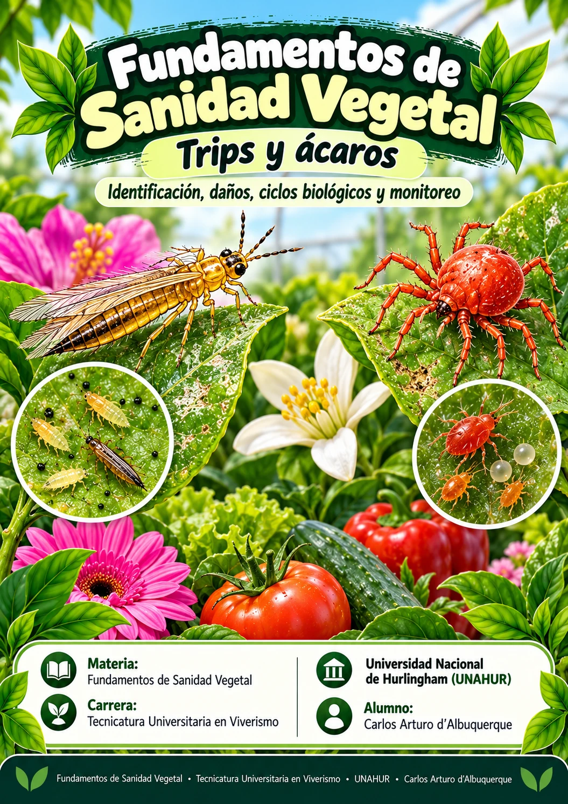

UNAHUR · VIVERISMO · GUÍA DE ESTUDIO 06
Pequeños organismos, grandes diferenciasTRIPS Y ÁCAROS
Observar para
comprender.
Reconocé trips y ácaros, relacioná sus daños con el cultivo y repasá los ciclos y el monitoreo. Seguí la secuencia de las láminas 5 a 10.

ANTES DE EMPEZAR
Trips y ácaros no son lo mismo.
Los trips son insectos del orden Thysanoptera. Los ácaros pertenecen a la clase Arachnida. Las láminas permiten comparar su aspecto, alimentación y relación con las plantas.
Se utilizan las siete imágenes compartidas: portada y láminas 5, 6, 7, 8, 9 y 10, en ese orden. Los tiempos y tamaños se atribuyen al material y no se interpretan como constantes para todas las condiciones o especies.
01 / TU RECORRIDO DE ESTUDIO
De la lámina 5 a la 10, en orden.
Elegí una ficha o avanzá paso a paso. Podés marcar las que ya repasaste.
02 / ENCONTRÁ LAS DIFERENCIAS
Una mirada, muchas pistas.
Buscá conceptos, especies y temas sin perder el orden del índice.
| Lámina | Contexto u hospedante | Daño o idea central | Grupo | Descripción |
|---|
Se distingue alimentación celular de «savia» y daño directo de enfermedad viral. Los datos numéricos son orientativos del material.
EXPLORÁ EL CICLO
Thrips tabaci, etapa por etapa.
Elegí una etapa. El material utiliza el término «ninfa» para los dos juveniles activos; aquí se conserva esa referencia entre paréntesis.
Las duraciones dependen de temperatura y otras condiciones. La cifra de 2–4 semanas describe el desarrollo hasta adulto, no toda la vida adulta.
03 / HACÉ MEMORIA
Leé la pregunta.
Recordá la idea.
Una tarjeta por tema, en el orden del índice. Intentá responder antes de darla vuelta.
04 / DESAFÍO DEL JARDÍN
Dieciocho preguntas para mirar mejor.
Tres preguntas por tema, siguiendo el orden de las láminas. Aprendé con cada explicación.
TU MATERIAL DE CONSULTA
Siete láminas para explorar.
Portada y láminas 5 a 10, con descripción y proporciones originales. Tocá para ampliar.
PRECISIONES PARA ESTUDIAR
Relacionar sin confundir.
- Los trips fitófagos extraen contenido celular; el plateado es un daño directo de la alimentación. UC IPM: alimentación de trips.
- TSWV es un virus y determinadas especies de trips actúan como vectores. No todos los trips transmiten este virus. UC IPM: TSWV y vectores.
- Una captura en trampa azul ayuda al monitoreo; no confirma por sí sola una enfermedad viral.